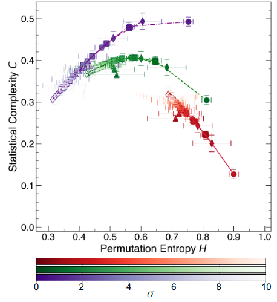
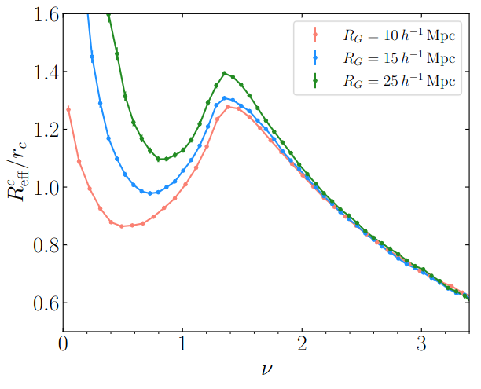
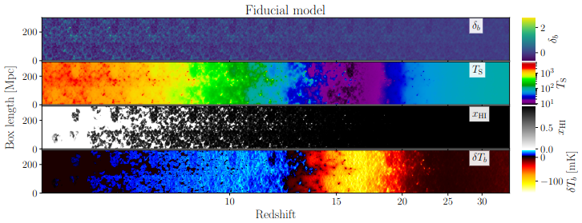
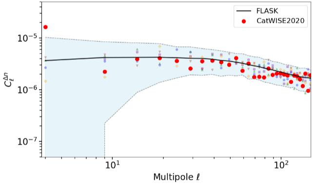

Cosmic Microwave Background • Large Scale Structure • Statistical Inference
Indian Institute of Astrophysics Bangalore
At the Indian Institute of Astrophysics, our Cosmology & Statistical Physics Group focuses on understanding the Universe through a combination of cosmology, statistical physics, and data-driven methodologies. Our research centers on extracting physical information from complex observational datasets, including the Cosmic Microwave Background, large-scale structure, and multiwavelength observations of galaxies. We develop and apply advanced statistical and computational tools—such as Minkowski Functionals, topological descriptors, and information-theoretic measures—to quantify structure, morphology, and complexity in cosmological fields. By integrating theoretical modeling, numerical simulations, and data analysis, we investigate key physical processes such as gravitational evolution, redshift-space distortions, and signatures of early-universe physics, including inflation and neutrino effects. Our goal is to uncover robust statistical signatures and fundamental principles that govern the formation and evolution of structure in the Universe.

As statistical systems, galaxies exhibit a rich interplay between organized structure and stochastic fluctuations across a broad range of spatial scales. This duality motivates the need for quantitative frameworks capable of capturing their morphological complexity. The ordinal patterns framework, along with its associated statistical measures: permutation entropy (H), disequilibrium (DE), statistical complexity (C), and ordinal network node entropy, has recently emerged as a powerful tool for analyzing such complexity in physical systems. We apply this framework in a multiwavelength, multiscale analysis of the galaxy NGC 628, utilizing observations in the near-ultraviolet, near-infrared, mid-infrared, and millimeter bands. Our results reveal a characteristic spatial scale of approximately 200 parsecs, marking the transition from small-scale structures influenced by star formation and stellar feedback to larger-scale morphology governed by the galaxy's dynamics. Furthermore, we find that the C vs. H trajectories for all wavelengths converge toward a common attractor curve, consistent with the behavior of isotropic Gaussian random fields. This convergence suggests a universal statistical behavior in galactic structure at large scales, despite the differing physical processes traced by each wavelength.
arXiv
We investigate the morphological properties of large-scale structure in the Universe and the physical processes that modify the excursion-set morphology of the three-dimensional matter density field. Using the Quijote N-body simulation suite, we study how an initially Gaussian random matter density field is altered by non-linear gravitational evolution, redshift-space distortions, and massive neutrino free-streaming. To quantify these effects, we employ a comprehensive set of morphological descriptors, including Minkowski Functionals, Betti numbers, Minkowski Tensors, and local measures of the size and shape of connected components and cavities. We find that gravitational evolution, on quasi-linear scales RG∼10h−1Mpc, strongly skews the one-point distribution and slightly smooths the field via the merging of critical points, with a more pronounced effect for minima and wall saddle points than for peaks. Redshift-space distortions produce the strongest morphological signal, generating pronounced anisotropies that are robustly captured by Minkowski Tensors and local shape measures, arising from both coherent large-scale flows and non-linear Finger-of-God effects. In contrast, massive neutrinos induce an approximately isotropic suppression of small-scale structure, slightly reducing the amplitudes of the Minkowski Functionals while leaving individual shape measures largely unchanged. We further explore the sensitivity of these statistics to variations in cosmological parameters Ωm, ns, and σ8, finding that they probe strongly degenerate combinations of Ωm and ns, while also exhibiting sensitivity to σ8 through the non-Gaussianity of the evolved density field.
arXiv
The redshifted 21 cm signal from the cosmic dawn and Epoch of Reionization (EoR) encodes important information about both astrophysical processes and primordial physics, such as inflation. In this work, we use morphological statistics to explore the sensitivity of the 21 cm signal to inflationary features and EoR dynamics simultaneously. Focusing on primordial features from particle production during inflation we generate semi-numerical simulations of the 21 cm signal across redshifts 5 < z < 35, incorporating these features. Using Minkowski Functionals (MFs), we analyze the morphology of 21 cm fields: density, neutral hydrogen fraction, spin temperature, and brightness temperature. We demonstrate that MFs are highly sensitive to both the amplitude and scale of primordial features, capturing rich morphological information. In particular, we show that MFs can robustly identify inflationary features and distinguish them from the standard model. We further explore various EoR scenarios, and demonstrate that combining MFs across redshifts can disentangle the signatures of primordial features from EoR effects. This approach opens new avenues for probing inflation with upcoming 21 cm surveys.
arXiv
The cosmological principle, which asserts a statistically homogeneous and isotropic universe on large scales, is a foundational assumption of the standard cosmological model. A critical test of this principle involves the kinematic interpretation of the Cosmic Microwave Background temperature dipole, conventionally attributed to our peculiar motion relative to the cosmic rest frame. The Ellis-Baldwin test provides a probe of this kinematic interpretation by searching for a matching Doppler-driven dipole in the number counts of extragalactic radio sources. Recent measurements from the CatWISE2020 quasar catalog have reported a dipole amplitude significantly exceeding the kinematic expectation, with a claimed significance of 4.9σ. We present a comprehensive reassessment of this test using the same dataset, incorporating major sources of uncertainty in the statistical inference. We use a simulation framework based on the FLASK package, incorporating lognormal realizations of the large-scale structure, the quasar clustering bias, the survey's radial selection function, and its exact sky coverage. Our simulations account for the kinematic dipole, the intrinsic clustering dipole, shot noise, and survey geometry effects. The analysis yields a revised significance of the kinematic dipole excess of 3.63σ in the absence of a clustering dipole, and 3.44σ in the presence of a randomly oriented clustering dipole. When the clustering dipole is aligned with the kinematic dipole direction, the significance decreases further to 3.27σ. Our analysis demonstrates that although the anomaly is reduced in significance, it cannot be explained solely as a result of the clustering dipole or mode coupling arising from the survey mask.
arXiv